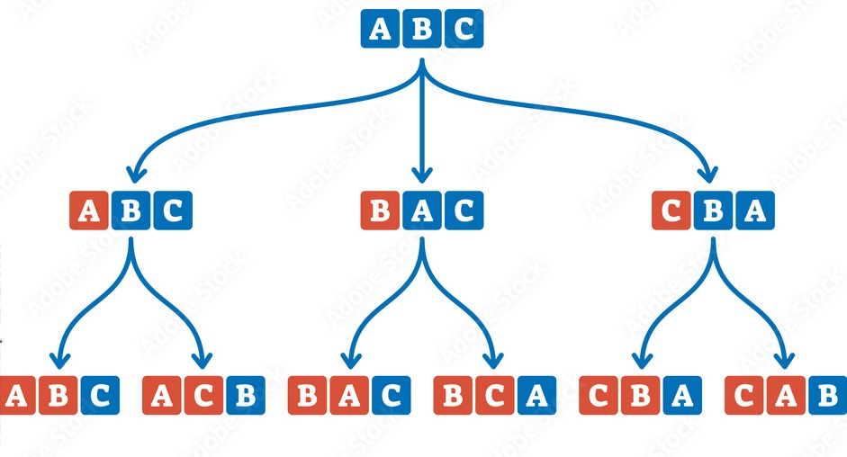
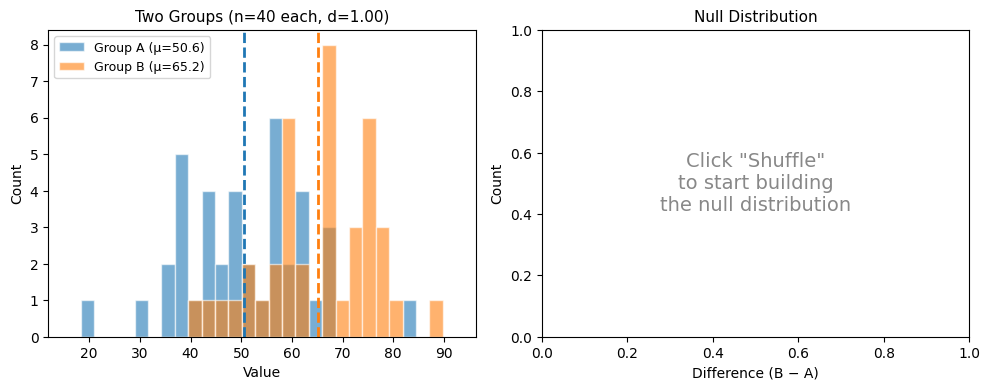
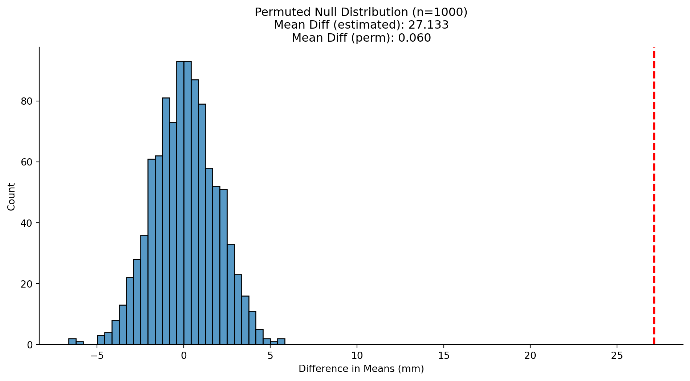
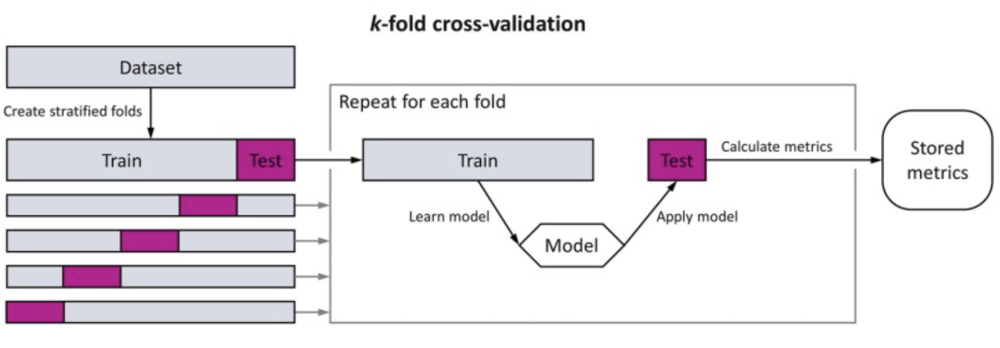
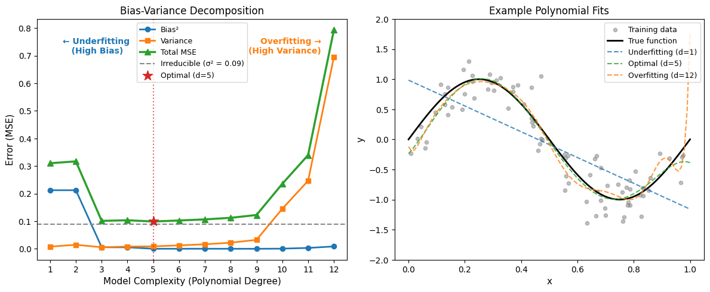
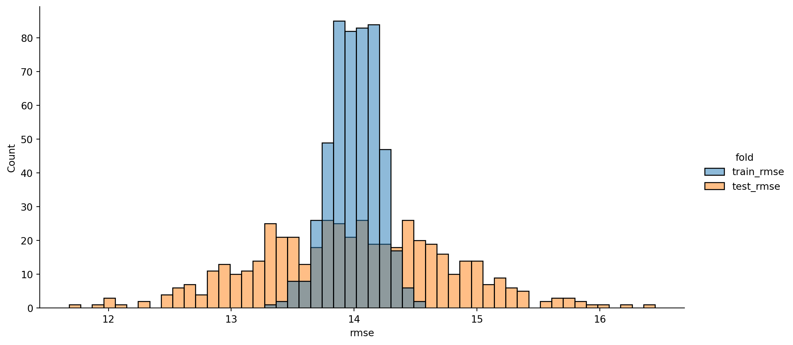
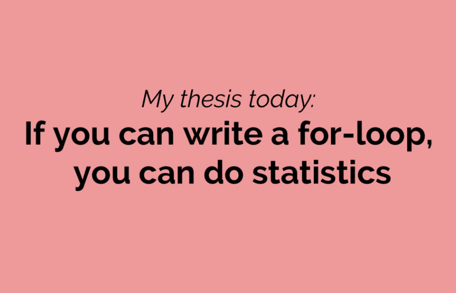

Code
# Imports
import polars as pl
from polars import col
import seaborn as sns
import numpy as npSite Updates: Week 10 Slides
Eshin Jolly
January 27, 2026
During the live course this notebook was a reactive marimo notebook with interactive “explorable” widgets. On this page those explorables are shown as static snapshots at their default settings — the surrounding text may still refer to dragging sliders or clicking buttons. To interact with them, run the original marimo notebook from your lab assignment repo.
In the previous notebook we learned two resampling approaches from Statistics for Hackers:
Both help us understand the sampling distribution — how our estimates bounce around.
In this notebook, we’ll complete the toolkit with two more approaches:
This notebook includes interactive widgets you can play with to build intuitions before writing any code. Drag sliders, change parameters, and watch what happens!
| species | island | bill_length_mm | bill_depth_mm | flipper_length_mm | body_mass_g | sex |
|---|---|---|---|---|---|---|
| str | str | f64 | f64 | f64 | f64 | str |
| "Adelie" | "Torgersen" | 39.1 | 18.7 | 181.0 | 3750.0 | "Male" |
| "Adelie" | "Torgersen" | 39.5 | 17.4 | 186.0 | 3800.0 | "Female" |
| "Adelie" | "Torgersen" | 40.3 | 18.0 | 195.0 | 3250.0 | "Female" |
| "Adelie" | "Torgersen" | 36.7 | 19.3 | 193.0 | 3450.0 | "Female" |
| "Adelie" | "Torgersen" | 39.3 | 20.6 | 190.0 | 3650.0 | "Male" |
We’ve seen that the bootstrap can tell us how uncertain our estimate is (e.g., “the mean flipper length is 200 ± 3 mm”).
But what about a different question: “Could this pattern arise purely by chance?”
For example, Gentoo and Adelie penguins seem to have different flipper lengths. But maybe that difference is just random noise — maybe species has nothing to do with flipper length and we just got unlucky with our sample.
Permutation testing (also called shuffling or randomization) answers this by simulating a world where there is no effect. We do this by shuffling the group labels — breaking the connection between species and flipper length — and seeing how big of a difference we’d get by chance.

The logic is:
If our observed difference is in the tails of the null distribution, it’s unlikely to have arisen by chance.
Try it yourself — adjust the effect size and click Shuffle to build a null distribution:
Static snapshot — interactive in the original marimo lab:

Each shuffle randomly reassigns the group labels, then computes the difference in means. This simulates what differences would look like if group membership didn’t matter.
Key things to notice:
We’ll test whether Gentoo and Adelie penguins have different flipper lengths. First, let’s see the data:
| species | mean_flength |
|---|---|
| str | f64 |
| "Adelie" | 190.10274 |
| "Gentoo" | 217.235294 |
27.132554391619664That’s a big difference! But let’s build a distribution of differences we might expect to see if species wasn’t related to flipper length, aka a null distribution.
First, let’s see what one shuffle looks like. We can use the same approach as bootstrapping with polars .sample() method. But this time we can use it within an expression, i.e. chaining it lik col('column').sample()
# Filter down two the 2 species
one_shuffle = penguins.filter(
col('species').is_in(['Adelie', 'Gentoo'])
).select(
col('species'),
# .sample() just this column without replacement and with shuffling, then rename it
col('flipper_length_mm').sample(fraction=1, shuffle=True).alias('flipper_length_shuffled')
)
one_shuffle.head()| species | flipper_length_shuffled |
|---|---|
| str | f64 |
| "Adelie" | 225.0 |
| "Adelie" | 224.0 |
| "Adelie" | 210.0 |
| "Adelie" | 213.0 |
| "Adelie" | 218.0 |
| species | mean_flength_shuffled |
|---|---|
| str | f64 |
| "Adelie" | 202.143836 |
| "Gentoo" | 202.462185 |
0.31834925751121546Notice how the shuffled difference isn’t the same (and typically much smaller) than the observed difference — because the shuffled groups are random mixtures of both species.
The key intuition is that by shuffling, we’ve broken the relationship between species and flipper_length_mm in the data. Repeating, this deliberate shuffling is what allows us to create the the null distribution:
# Number of permutations
nperm = 1000
# Store results
perm_diffs = []
# If you can loop you can do stats!
for _ in range(nperm):
# Created shuffled dataframe
this_shuffle = penguins.filter(col("species").is_in(["Adelie", "Gentoo"])).select(
col("species"),
col("flipper_length_mm").sample(fraction=1, shuffle=True).alias("flipper_length_shuffled"),
)
# Calculate mean diff
shuffled_diff = (
this_shuffle.group_by("species", maintain_order=True)
.agg(col("flipper_length_shuffled").mean())
.select(col("flipper_length_shuffled").diff().last()).item()
)
# Save it
perm_diffs.append(shuffled_diff)
# Convert to DataFrame
perm_df = pl.DataFrame(
{
"permutation": range(nperm),
"diff": perm_diffs,
}
)
perm_df.head()| permutation | diff |
|---|---|
| i64 | f64 |
| 0 | -0.169736 |
| 1 | 0.516634 |
| 2 | 1.584321 |
| 3 | -2.716933 |
| 4 | 0.958962 |
Now we can calculate a “p-value.” Let’s think through the logic here:
If we don’t care about a directional difference (i.e. which particlar species’ mean is greater) we can take the absolute value.
This is commonly called a “two-tailed” test/p-value:
0.0In practice we use a slightly adjusted formula for calculating a permuted p-value called the Phipson-Smyth correction based on this paper.
We add 1 to the numerator and denominator of the proportion formula for 2 reasons:
# Note: I've just broken up the single line in the previous cell to make things clearer
# Number of permuted means >= observed + 1
numerator = perm_df.filter(
col('diff').abs() >= np.abs(observed_diff)
).height + 1
# Total number of permutation + 1
denominator = nperm + 1
proportion = numerator / denominator
proportion0.000999000999000999Notice that had we run more permutations the p-value would change even if the permuted distribution isn’t different:
In this way this the number of resamples of a permutation test is directly tied to the precision of the p-value
Now let’s visualize the null distribution and see where our observed difference falls:
# Calculate p-value: fraction of permuted differences as extreme as observed
perm_mean = perm_df.select('diff').mean().item()
perm_df.filter(
col('diff').abs() > np.abs(observed_diff)
)
# Plot the null distribution
_grid = sns.displot(
data=perm_df.to_pandas(),
x="diff",
kind="hist",
bins=30,
aspect=2,
)
_grid.refline(x=observed_diff, color="red", ls="--", lw=2)
_grid.set(
title=f'Permuted Null Distribution (n={nperm})\nMean Diff (estimated): {observed_diff:.3f}\nMean Diff (perm): {perm_mean:.3f}',
xlabel="Difference in Means (mm)",
)| permutation | diff |
|---|---|
| i64 | f64 |

The p-value answers: “If there were truly no difference between these groups, how often would I see a difference at least this extreme?”
In this case none of our permuted differences were even close to the observed difference.
Remember a p-value, whether calculated via permutation like we just did or via analytic formula (e.g. R/Python default) does not tell you any thing about the properties of your estimator!
It just shows you how the same estimator would behave under randomization. How large or small the magnitude of your estimator is (i.e. the mean difference ) is independent of this randomization. A “tiny effect” can be extremely robust to randomization, i.e. have a “small p-value” and visa-versa.
We’ll discuss this more when we get to power and sensitivity.
Now test whether Adelie and Chinstrap penguins have different flipper lengths.
Hint: You can copy and adapt the code from above (or challenge yourself to write a function!) — just change which species you filter, and remember to use new variable names
Above we mentioned you can take the absolute value of your observed and permuted estimators to calculate a two-tailed test/p-value.
Can you adapt this to test a directional hypothesis instead? Try adjusting the calculation, visualizing and seeing what happens
We’ve now seen three resampling methods:
But there’s one more question we haven’t addressed: “How well does our estimator work on new, unseen data?”
Remember from the previous notebook: the mean minimizes SSE (sum of squared errors) and the median minimizes SAE. Both are good estimators on the data we observed.
But how well do they generalize — how good are they at predicting observations we haven’t seen yet?

Cross-validation simulates this generalization using following steps:
In the image above we’re seeing one type of approach for step 4 called \(k\) fold CV. This just means we split the data into \(k\) folds instead of just 2. A common \(k\) is 5 or 10, which means we fit the estimator on 4/5ths of our data and test it on 1/5th, then we rotate (we’ll explore this more below).
Cross-validation is what allows us to decompose our prediction error into bias and variance. Remember the classic equation:
Error = Bias² + Variance + Irreducible Error
Play around with the widget below to see how model complexity affects this decomposition:
Static snapshot — interactive in the original marimo lab:

This is the classic bias-variance tradeoff. We fit polynomials of increasing degree to simulated data (y = sin(2πx) + noise) and decompose the test error.
Key things to notice:
We’ll compare how well the mean and median of flipper length predict held-out penguins. First, let’s see what one train/test split looks like:
First, depending on what type of outcome variable you have (e.g. continuous or categorical) there are different ways we can evaluate an estimator. A common approach for continuous data is RMSE (Root Mean Squared Error):
\[\text{RMSE} = \sqrt{\frac{1}{n_{\text{test}}} \sum_{i=1}^{n_{\text{test}}} (x_i - \hat\theta)^2}\]
where \(x_i\) are the test observations and \(\hat\theta\) is the estimate from the training data.
Let’s start simple and just do a single CV split (skip step 4 above). We’ll use 80% of the data to fit our estimator, and then evaluate it on the left-out 20%
# Choose the train/test ratio
train_pct = 80 # 80% train, 20% test
n_total = penguins.height
n_train = int(train_pct / 100 * n_total)
n_test = n_total - n_train
print(f"Total penguins: {n_total}")
print(f"Training set: {n_train} ({train_pct}%)")
print(f"Test set: {n_test} ({100 - train_pct}%)")
# Shuffle and split
# Note: shuffling here is just shuffling the order of ALL rows
# it's not breaking the relationships between variables like permutation!
# It just ensure's we don't always use the first 80% of rows to train data
# and pick a different 80% each time
shuffled_penguins = penguins.sample(fraction=1.0, shuffle=True)
# Quickly get train/test splits
train_data = shuffled_penguins.head(n_train)
test_data = shuffled_penguins.tail(n_test)
# Fit estimators on training data
train_mean = train_data.select("flipper_length_mm").mean().item()
train_values = train_data.select("flipper_length_mm").to_series().to_numpy()
train_rmse = np.sqrt(np.mean((train_values - train_mean) ** 2))
test_values = test_data.select("flipper_length_mm").to_series().to_numpy()
test_rmse = np.sqrt(np.mean((test_values - train_mean) ** 2))
# train_median = train_data.select("flipper_length_mm").median().item()
print(f"\nTraining mean: {train_mean:.3f} mm")
print(f"Train RMSE: {train_rmse:.3f} mm")
print(f"Test RMSE: {test_rmse:.3f} mm")Total penguins: 333
Training set: 266 (80%)
Test set: 67 (20%)
Training mean: 201.098 mm
Train RMSE: 14.087 mm
Test RMSE: 13.623 mm14.087462917553523Try rerunning the cell above a few times and notice how the mean, train RMSE, and test RMSE keep changing based on what random 80% we use for training
That’s one split. But the result depends on which penguins ended up in train vs test! Let’s repeat this many times to get a stable comparison:
# Number of random splits
nsplits = 500
# Store results
cv_results = []
# If you can loop you can do stats!
for i in range(nsplits):
# Shuffle and split
_shuffled = penguins.sample(fraction=1.0, shuffle=True)
_train = _shuffled.head(n_train)
_test = _shuffled.tail(n_test)
# Get test values as numpy array
_train_estimator = _train.select("flipper_length_mm").mean().item()
_train_rmse = _train.select(
mse = (col('flipper_length_mm') - _train_estimator).pow(2).mean()
).select(col('mse').sqrt()).item()
_test_rmse = _test.select(
mse = (col('flipper_length_mm') - _train_estimator).pow(2).mean()
).select(col('mse').sqrt()).item()
cv_results.append({
"split": i,
"train_rmse": _train_rmse,
"test_rmse": _test_rmse,
})
# Convert to DataFrame
cv_df = pl.DataFrame(cv_results)
cv_df.head()| split | train_rmse | test_rmse |
|---|---|---|
| i64 | f64 | f64 |
| 0 | 14.253099 | 12.96508 |
| 1 | 14.239555 | 12.992413 |
| 2 | 14.090719 | 13.655342 |
| 3 | 13.857673 | 14.556717 |
| 4 | 13.739567 | 14.988337 |
Now let’s visualize the comparison. First we need a tidy dataframe.
| split | fold | rmse |
|---|---|---|
| i64 | str | f64 |
| 0 | "train_rmse" | 14.253099 |
| 1 | "train_rmse" | 14.239555 |
| 2 | "train_rmse" | 14.090719 |
| 3 | "train_rmse" | 13.857673 |
| 4 | "train_rmse" | 13.739567 |
Let’s take a quick look at the average error and the variance:
| fold | rmse |
|---|---|
| str | f64 |
| "test_rmse" | 13.986843 |
| "train_rmse" | 13.996809 |
| fold | rmse |
|---|---|
| str | f64 |
| "train_rmse" | 0.196806 |
| "test_rmse" | 0.784045 |
Let’s visualize this using a histogram colored by training and testing splits:

Notice that our training errors are lower and more consistent (lower mean and smaller standard-deviation), while our testing errors are higher and more variable.
This is the bias-variance trade-off in action:
While we’re using a simple model here (the mean), this general approach can be use with any type of model (e.g. regression, neural network etc)
Try modifying the cross-validation code to use the median as an estimator instead. How does its RMSE compare to the mean for training and testing?
Why might RMSE not be the right metric to evaluate the median? Hint: think about the loss-function
Can you evaluate the median differently? Try it out and see what happens
We’ve been writing our own train/test splits by hand, which is great for understanding the mechanics. But in practice, the scikit-learn library provides well-tested tools for this.
We won’t dive deep into scikit-learn here — it’s a massive library for machine learning - for now, let’s learn just three useful functions for splitting data for cross-validation:
| Function | What it does |
|---|---|
train_test_split |
One random split into train + test |
KFold |
Split into k non-overlapping folds, rotating which fold is the test set |
LeaveOneOut |
Extreme case: each observation takes a turn as the lone test point |
There are many more splitters available especially when working with more complicated data (e.g. repeated observations, multiple levels, etc). We encourage you to check them out to see what’s most appropriate for the kind of data you typically deal with.
train_test_split — the one-liner version of what we did by hand:
If you examine the function help or online docs, you’ll notice it needs an array. This is a data-type we haven’t really worked with, but don’t worry polars has our back!
Just use the .to_numpy() method to convert any column to an array that the sklearn library understands
array([181., 186., 195., 193., 190., 181., 195., 182., 191., 198., 185.,
195., 197., 184., 194., 174., 180., 189., 185., 180., 187., 183.,
187., 172., 180., 178., 178., 188., 184., 195., 196., 190., 180.,
181., 184., 182., 195., 186., 196., 185., 190., 182., 190., 191.,
186., 188., 190., 200., 187., 191., 186., 193., 181., 194., 185.,
195., 185., 192., 184., 192., 195., 188., 190., 198., 190., 190.,
196., 197., 190., 195., 191., 184., 187., 195., 189., 196., 187.,
193., 191., 194., 190., 189., 189., 190., 202., 205., 185., 186.,
187., 208., 190., 196., 178., 192., 192., 203., 183., 190., 193.,
184., 199., 190., 181., 197., 198., 191., 193., 197., 191., 196.,
188., 199., 189., 189., 187., 198., 176., 202., 186., 199., 191.,
195., 191., 210., 190., 197., 193., 199., 187., 190., 191., 200.,
185., 193., 193., 187., 188., 190., 192., 185., 190., 184., 195.,
193., 187., 201., 192., 196., 193., 188., 197., 198., 178., 197.,
195., 198., 193., 194., 185., 201., 190., 201., 197., 181., 190.,
195., 181., 191., 187., 193., 195., 197., 200., 200., 191., 205.,
187., 201., 187., 203., 195., 199., 195., 210., 192., 205., 210.,
187., 196., 196., 196., 201., 190., 212., 187., 198., 199., 201.,
193., 203., 187., 197., 191., 203., 202., 194., 206., 189., 195.,
207., 202., 193., 210., 198., 211., 230., 210., 218., 215., 210.,
211., 219., 209., 215., 214., 216., 214., 213., 210., 217., 210.,
221., 209., 222., 218., 215., 213., 215., 215., 215., 215., 210.,
220., 222., 209., 207., 230., 220., 220., 213., 219., 208., 208.,
208., 225., 210., 216., 222., 217., 210., 225., 213., 215., 210.,
220., 210., 225., 217., 220., 208., 220., 208., 224., 208., 221.,
214., 231., 219., 230., 229., 220., 223., 216., 221., 221., 217.,
216., 230., 209., 220., 215., 223., 212., 221., 212., 224., 212.,
228., 218., 218., 212., 230., 218., 228., 212., 224., 214., 226.,
216., 222., 203., 225., 219., 228., 215., 228., 215., 210., 219.,
208., 209., 216., 229., 213., 230., 217., 230., 222., 214., 215.,
222., 212., 213.])# One random 80/20 split (same as our hand-written version!)
_train, _test = train_test_split(flippers, test_size=0.2)
_train_mean = np.mean(_train)
_train_rmse = np.sqrt(np.mean((_train - _train_mean) ** 2))
_test_rmse = np.sqrt(np.mean((_test - _train_mean) ** 2))
print(f"Train: {len(_train)} observations")
print(f"Test: {len(_test)} observations")
print(f"Train RMSE: {_train_rmse:.3f} mm")
print(f"Test RMSE: {_test_rmse:.3f} mm")Train: 266 observations
Test: 67 observations
Train RMSE: 14.115 mm
Test RMSE: 13.528 mmKFold — instead of one random split, divide the data into k non-overlapping chunks (“folds”). Each fold takes a turn as the test set while the rest is used for training. This is more efficient because every observation gets tested exactly once:
from sklearn.model_selection import KFold
# KFold allows us to create a custom function that splits the data for us
my_kfold_splitter = KFold(n_splits=5, shuffle=True)
# Make splits
splits = my_kfold_splitter.split(flippers)
fold_rmses = []
# enumerate() gives us the current number of the loop we're on
# which I'm calling fold_num
for fold_num, (train_indices, test_indices) in enumerate(splits):
_train = flippers[train_indices]
_test = flippers[test_indices]
_pred = np.mean(_train)
_rmse = np.sqrt(np.mean((_test - _pred) ** 2))
fold_rmses.append(_rmse)
print(f"Fold {fold_num}: train={len(train_indices)}, test={len(test_indices)}, RMSE={_rmse:.3f}")
print(f"\nAverage RMSE across 5 folds: {np.mean(fold_rmses):.2f} (± {np.std(fold_rmses):.3f})")Fold 0: train=266, test=67, RMSE=14.632
Fold 1: train=266, test=67, RMSE=13.946
Fold 2: train=266, test=67, RMSE=13.298
Fold 3: train=267, test=66, RMSE=13.928
Fold 4: train=267, test=66, RMSE=14.412
Average RMSE across 5 folds: 14.04 (± 0.460)LeaveOneOut — the extreme case where k = n. Each observation gets held out one at a time, and the estimator is trained on the remaining n − 1 observations. This gives the most thorough evaluation, but is slow for large datasets:
from sklearn.model_selection import LeaveOneOut
# Same as before
loo = LeaveOneOut()
loo_errors = []
for all_train, left_out_observation in loo.split(flippers):
_train = flippers[all_train]
_test = flippers[left_out_observation]
_pred = np.mean(_train)
_error = (_test[0] - _pred) ** 2 # single test point
loo_errors.append(_error)
loo_rmse = np.sqrt(np.mean(loo_errors))
print(f"Leave-One-Out: {len(loo_errors)} splits (one per observation)")
print(f"LOO RMSE: {loo_rmse:.2f}")Leave-One-Out: 333 splits (one per observation)
LOO RMSE: 14.04Notice the progression from less splitting to more splitting:
| Method | # of splits | Train size | Test size | Speed |
|---|---|---|---|---|
train_test_split |
1 | ~80% | ~20% | Instant |
KFold(k=5) |
5 | ~80% each | ~20% each | Fast |
KFold(k=10) |
10 | ~90% each | ~10% each | Fast |
LeaveOneOut |
n | n − 1 | 1 | Slow for big data |
More splits → more stable RMSE estimate, but slower. 5-fold or 10-fold CV is the most common choice in practice.
Try playing with another splitter from sklearn (linked above) or adjusting the values of any of the ones we explored here to really make sure you understand what’s going on.
Earlier you were asked to compare a different metric for evaluating the median instead of RMSE. sklearn offers many such “metrics” and “scorers” to do that for you.
See if you can use one of the following to evaluate the mean/median differently.
Then change up the splitter and see how they interact
Over the last two notebooks, we’ve learned four computational approaches to statistics — all based on the same simple idea: use a for-loop to repeat a random process and see what happens.
| Approach | Question | Method | From |
|---|---|---|---|
| Monte Carlo | “What if the world worked like this?” | Simulate from assumed distribution | Notebook 01 |
| Bootstrap | “How uncertain is my estimate?” | Resample WITH replacement | Notebook 01 |
| Permutation | “Could this arise by chance?” | Shuffle WITHOUT replacement | This notebook |
| Cross-Validation | “Does my estimator generalize?” | Train/test splits | This notebook |
Each method answers a different question about your data. The beauty is that they all follow the same computational pattern:
results = []
for i in range(n_simulations):
resampled_data = resample_somehow(data) # the method differs
result = compute_statistic(resampled_data)
results.append(result)This is what Jake VanderPlas means when he says:
